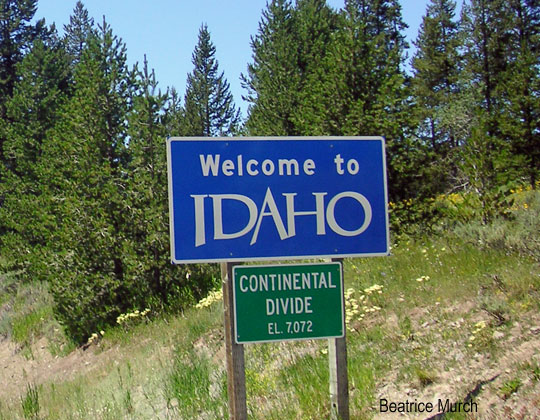

Idaho is full of hidden gems that locals know and love. From quiet hiking trails to small-town cafés, these spots let you experience the state beyond the usual tourist stops.
Every region of Idaho has its own flavor. Boise offers a vibrant downtown and the Basque Block, northern towns like Coeur d’Alene and Sandpoint shine with lakes and festivals, and mountain towns like McCall and Stanley provide stunning scenery without the crowds.
Local Tips & Favorites
- Food & Drink – Huckleberry treats, Boise breweries, creative potato dishes
- Hidden Nature – Silver Creek Preserve, Redfish Lake, quiet Sawtooth trails
- Small Town Charm – McCall, Sandpoint, Wallace
- Local Events – Farmers markets, fairs, seasonal festivals
- Shopping – Local shops and artisan markets
- Travel Tip – Ask locals for fishing spots, hikes, and restaurants